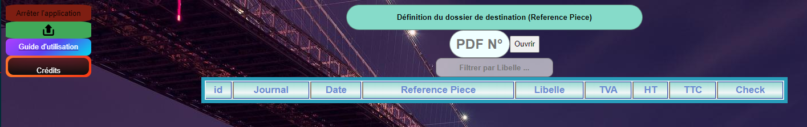
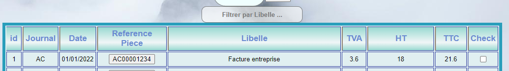

ExcelViewer permet de lire un certain type de document Excel (.xlsx), dont les colonnes sont respectivement dans cet ordre :
| Journal | Date | Compte | Ref. Piece | Pièce | Libellé | Débit | Crédit | Echeance |
Note : Le titre des colonnes importe peu, seul l'ordre (Journal > Date > Compte > ...) compte.
- Afin de lancer l'application, il suffit de double cliquer sur ExcelViewer.exe.
- Tant que l'application ne sera pas lancée, le fond de l'écran de la page ExcelViewer.html restera blanche avec comme fond d'écran "Application non lancée".
- Lorsque l'application est lancée, un fond d'écran aléatoire apparaitra et signifiera que l'outil sera prêt à l'emploi.

- Arrêter l'application : Permet d'arrêter l'application. Dans les 5 secondes, le fond d'écran disparaîtra et attestera de la bonne fermeture de l'application.
Note : Il n'y a pas de problème si l'application n'est pas coupée après utilisation, mais c'est toujours mieux d'éteindre la pièce une fois qu'on en sort !
- Icône d'upload (verte, à gauche) : Permet de charger l'Excel. Une fois chargé, le tableau se mettra à jour.
Note : Si un autre type de document est donné (pdf, image, ...), rien ne se passera.
- Guide d'utilisation :)
- Crédits : Mon contact
- Définition du dossier de destination (Référence Piece) : Localise le dossier contenant des PDFs, permettant de les ouvrir via la balise en dessous (PDF N°) & via les raccourcis dans le tableau
- PDF N°: Permet d'ouvrir un PDF contenu dans le dossier renseigné ci-dessus via ses derniers caractères (ex: "AC000004972.pdf" -> Peut s'ouvrir en écrivant "4972", "04972", ...).
- Filtrer par libelle : Filtre l'ensemble des lignes via le libelle.

- Dans ce tableau, le bouton sous "Reference Pièce" est cliquable et ouvre directement le PDF situé dans le dossier renseigné via Définition du dossier de destination.
- Dans ce tableau, il est possible de cocher une case "check" afin de suivre son évolution. Cliquer ou non ce bouton n'a aucune influence sur le reste de la page.